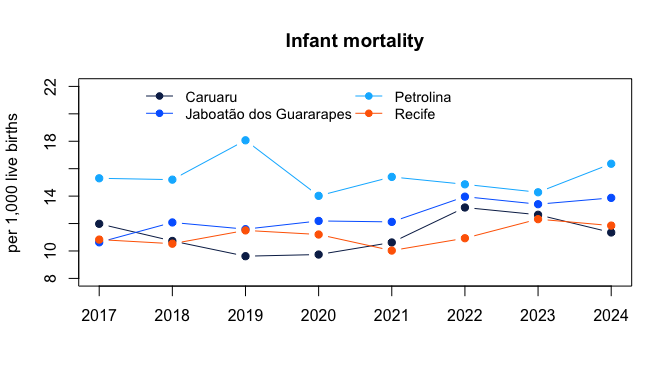
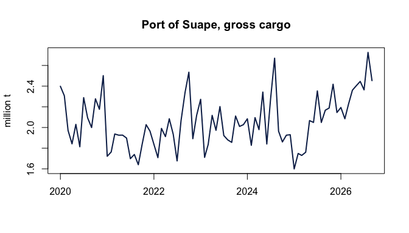

Base R graphics only, so the examples run with nothing but the package.
Infant mortality in the largest cities
Infant mortality (deaths under one year per thousand live births, by municipality of residence) for Recife, Jaboatão dos Guararapes, Caruaru and Petrolina:
cidades <- c(
Recife = "2611606", Jaboatao = "2607901",
Caruaru = "2604106", Petrolina = "2611101"
)
tmi <- condepe_series(
"datasus_mortalidade_infantil",
"Taxa de mortalidade infantil (por mil nascidos vivos)",
code = cidades
)
largo <- reshape(
as.data.frame(tmi[, c("nm_municipio", "ano", "valor")]),
idvar = "ano", timevar = "nm_municipio", direction = "wide"
)
largo
#> ano valor.Caruaru valor.Jaboatão dos Guararapes valor.Petrolina valor.Recife
#> 1 2017 11.98 10.63 15.30 10.83
#> 2 2018 10.73 12.08 15.20 10.53
#> 3 2019 9.62 11.59 18.07 11.50
#> 4 2020 9.74 12.19 14.02 11.20
#> 5 2021 10.62 12.12 15.40 10.03
#> 6 2022 13.17 13.96 14.86 10.93
#> 7 2023 12.64 13.41 14.28 12.32
#> 8 2024 11.35 13.87 16.36 11.85
cores <- c("#0c2856", "#0068ff", "#00b7ff", "#ff6700")
matplot(
largo$ano, largo[, -1], type = "b", pch = 19, lty = 1, col = cores,
xlab = "", ylab = "per 1,000 live births", main = "Infant mortality",
ylim = c(8, 22)
)
legend("top", sub("valor.", "", names(largo)[-1]), ncol = 2,
col = cores, lty = 1, pch = 19, bty = "n", cex = 0.9)
plot of chunk tmi
Cargo at the port of Suape
Monthly gross cargo handled at Suape (Ipojuca), in million tonnes:
suape <- condepe_series("porto_suape_carga", "Porto de Suape - Carga bruta total")
suape$data <- as.Date(sprintf("%d-%02d-01", suape$ano, suape$mes))
plot(
suape$data, suape$valor / 1e6, type = "l", lwd = 2, col = "#0c2856",
xlab = "", ylab = "million t", main = "Port of Suape, gross cargo"
)
plot of chunk suape
IDEB of the municipal schools
The Basic Education Development Index (IDEB) of the early years of elementary school, municipal network, for the State capital:
ind <- condepe_indicators("inep_ideb_anos_iniciais")
head(ind$indicador_base[grepl("^IDEB observado", ind$indicador_base)])
#> [1] "IDEB observado - Estadual" "IDEB observado - Municipal"
#> [3] "IDEB observado - Pública"
ideb <- condepe_series(
"inep_ideb_anos_iniciais", "IDEB observado - Municipal",
code = "2611606"
)
ideb[, c("ano", "valor")]
#> # A tibble: 11 × 2
#> ano valor
#> <int> <dbl>
#> 1 2005 3.2
#> 2 2007 3.8
#> 3 2009 4.1
#> 4 2011 4.1
#> 5 2013 4.2
#> 6 2015 4.6
#> 7 2017 5
#> 8 2019 5.2
#> 9 2021 5.3
#> 10 2023 5.5
#> 11 2025 5.8All municipalities in one year
Live births by municipality of residence in 2024, the ten largest:
nasc <- condepe_series(
"datasus_sinasc", "Nascidos vivos por residência - Total",
years = 2024
)
head(nasc[order(-nasc$valor), c("nm_municipio", "valor")], 10)
#> # A tibble: 10 × 2
#> nm_municipio valor
#> <chr> <dbl>
#> 1 Recife 16116
#> 2 Jaboatão dos Guararapes 7284
#> 3 Petrolina 6175
#> 4 Caruaru 5285
#> 5 Olinda 3879
#> 6 Paulista 3284
#> 7 Cabo de Santo Agostinho 2435
#> 8 Garanhuns 1965
#> 9 Camaragibe 1711
#> 10 Vitória de Santo Antão 1622